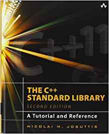

Reminder: These notes will be taken down permanently on Friday, April 24, 2020. If you want to save a copy for yourself, please download them before that time.
"My definition of an expert in any field is a person who knows enough about what's really going on to be scared." -- P.J. Plauger
|
|
Reminder: These notes will be taken down permanently on Friday, April 24, 2020. If you want to save a copy for yourself, please download them before that time. |
|
Information
If you have any questions about any assignment, please post the questions in the CS170 Forum on the CS170 Moodle website. There are many people that can answer your question. If you just send your question to me in an email, it may be a while until (or if) I get back to you. Also, if you have a question about the assignment, it's very likely that many other students have the same question and they will benefit from the posted answers.
Mead Approved™ Books
|

The C++ Standard Library: A Tutorial and Reference (2nd Edition):
The C++ standard library provides a set of common classes and interfaces that greatly
extend the core C++ language. The library, however, is not self-explanatory. To make
full use of its components–and to benefit from their power–you need a resource that
does far more than list the classes and their functions.
The C++ Standard Library: A Tutorial and Reference, Second Edition, describes this library as now incorporated into the new ANSI/ISO C++ language standard (C++11). The book provides comprehensive documentation of each library component, including an introduction to its purpose and design; clearly written explanations of complex concepts; the practical programming details needed for effective use; traps and pitfalls; the exact signature and definition of the most important classes and functions; and numerous examples of working code. The book focuses in particular on the Standard Template Library (STL), examining containers, iterators, function objects, and STL algorithms. Available for free from Digipen's online books from Safari Books Online via Library Services here
|
References
Online Safari References:
Other References:
Required Software (free)
All of the software that is required for this course is installed on all of the computers at Digipen. However, for those of you that wish to also work on your own computers (recommended), these are the things you will need to install and configure on your own computer.
This is the same compiler that you installed for CS120, so if you installed it for CS120, you don't have to do anything.
The zip file contains many command-line utilities that you will use throughout your time at Digipen. The zip file is about 530 MB and extracts to about 1.5 GB. Creates a folder named cygwin64 on the C: drive.
This will list all of the directories in the PATH with each on a separate line. That is:path | tr ; "\n"
Token Meaning path Displays the PATH as one long line | A vertical bar (pipe symbol), usually on the key with the backslash (\) tr The translate command ; A semi-colon (usually to the right of the letter 'L' on the keyboard). On Linux and Mac OS X, use a colon instead. "\n" A double quote, backslash, lowercase letter 'N', double quote
Version 8.1.0 is what is installed with MinGW on the computers at Digipen.
For non-Windows users, if you can't get version 8.1.0,
any 8.x.x version will probably be fine. We won't be using any of the advanced features of
C/C++ that are in 8.x, but you do want to have the closest version possible so that you will
get the same errors and warnings that 8.1 emits.
For Mac people, you may have to install it (using homebrew)
as the default compiler for C and C++ on Mac is Clang. If you are new to software development,
you may need to seek help from other Mac users. (I'm not a Mac user, although I pretend sometimes!)
For Linux people, I recommend Linux Mint. The latest version comes with version 7.x, but
it can easily be upgraded.
Here's some information on
installing multiple versions.
However, any distribution that allows you
to use version 8.x of the compiler should work.
- mem.leaks.cpp Sample program to test out the memory debuggers. Here's a simpler one: mem.bugs.cpp.
- Command line switches for Dr. Memory v. 2.2.0
- Documentation, especially how to build your program with each compiler.
- A technical document from the authors of the tool. It gets a little technical, but interesting for those that might want to write their own memory debugger at some point in the (distant!) future.
- If you get an error message in Windows 10 saying something like "Running on an unsupported operating system", following the instructions in the error message. Summarized here:
If you need more help with Dr. Memory that was demonstrated in class, look here.Put this in the bin directory (32-bit) of Dr. Memory (probably C:\Program Files (x86)\Dr. Memory\bin)
http://drmemory.org/syscalls_wow64.txtPut this in the bin64 directory (64-bit) of Dr. Memory (probably C:\Program Files (x86)\Dr. Memory\bin64)
http://drmemory.org/syscalls_x64.txtDetails can be found here.
- There are some known issues with Dr. Memory not working well with Windows 10 (what's new?). If you are having problems with Windows 10, you might want to try to install the Windows Subsystem for Linux (WSL) and then use Valgrind to detect memory errors. I wrote a brief tutorial here.
Linux/Mac/Cygwin/makefilesWindows (no makefile)( cat Doxyfile ; echo "EXTRACT_ALL=YES" ) | doxygen - ( cat Doxyfile ; echo "EXTRACT_ALL=NO" ) | doxygen -( type Doxyfile & echo EXTRACT_ALL=YES ) | doxygen.exe - ( type Doxyfile & echo EXTRACT_ALL=NO ) | doxygen.exe -
Other useful stuff:
Notes
Additional Topics:
Homework Assignments
Please remember that all programs absolutely, positively, MUST compile cleanly with g++. If the g++ compiler gives a warning or error, you'll get an automatic 0 on the assignment. (Note, however, that since we're using a submission server that will compile and link your code, you won't be able to submit anything with warnings or errors.)
Sample command lines for compiling/linking source file source.cpp into hw1.exe:
GNU g++:g++ -o hw1 source.cpp -Wall -Werror -Wextra -ansi -pedantic -O
| Assignments, Problems and Reading (Nothing to hand in) | Due Date |
|---|---|
| Read chapters one and two in the textbook and skim over chapter 3 as it's very similar to C.
You can skim over anything that is related to C++ 11 features. I'll be discussing some of those
features later in the semester.
Make sure you can compile with the compilers above. | Saturday, January 11, 2020 |
| Read Chapters 1 and 2 from The make Manual.
Try to create a very simple makefile and test it. Advanced students can read more, if you're inclined.
Also, take any two of your CS120 assignments/labs (e.g. spellcheck/dumpit) and create a makefile for it. This will show you if you understand the presentation I gave on using make and will prepare you for future labs. Read these sections from the Doxygen help : Getting started, Documenting the code, and Lists. You should also skim these sections (for reference and information): Configuration and Special Commands. Take an assignment/lab (e.g. spellcheck) and convert the CS120-style comments (file header comment and function header comments) to Doxygen-style comments and run Doxygen on it. Here is a Doxygen template for you to start with. Rename it to just Doxyfile. | Monday, January 13, 2020 |
|
Moving from C to C++ Points out some of the more obvious differences.
Dynamic Memory Allocation in C++ Using new and delete to allocate and free memory. | Wednesday, January 15, 2020 |
| Review these notes: Introduction to linked-lists | Monday, January 27, 2020 |
| Chapter 9 - Questions: #2, #3, #4 | Monday, February 3, 2020 |
| Study Quiz #1 | |
| Chapter 8 - Questions: #2, #3, #4, #5 (#6 in 5th edition). Programming: #2 | Wednesday, February 5, 2020 |
| Study Quiz #2 | |
| Chapter 10 - Questions: #1-6, #8, #10. | Monday, February 10, 2020 |
| Chapter 11 - Questions: #1-7. | Monday, February 17, 2020 |
| Study Quiz #3 | |
| Chapter 12 - Questions: #1-5. | Monday, February 21, 2020 |
| Study Quiz #4 | |
| Read Chapter 16, pages 951-968, 978-991 | Friday, March 6, 2020 |
| Study Quiz #5 | |
| Study Quiz #6 | |
| Chapter 13 - Questions: #1-12. | Wednesday, April 1, 2020 |
| Study Quiz #7 |
- Assignment ListLab - Due Thursday, March 5, at 10:00 pm (This is from the List labs.)
- Extra Credit Programming Assignment - Due Sunday, March 22, 2020 at 10:00 pm
Optional Extra Credit Lab/Assignment:
Additional Reading Assignments (required)
Interesting reading (optional)